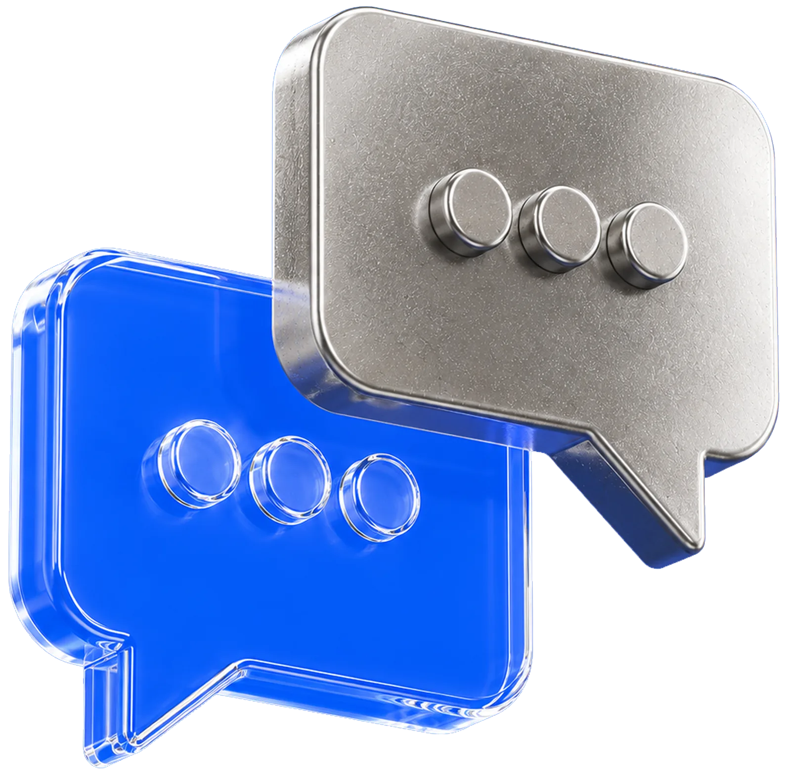

Динамика и структура затрат — расходы по периодам, видам и количеству услуг
Сократите время на подготовку отчётов по командировкам
Первый на рынке AI‑аналитик корпоративных поездок — внутри онлайн‑сервиса Tumodo
Подробнее →
Тео — AI‑аналитик корпоративных поездок
Один вопрос о командировках — готовый анализ в диалоге
Привет, я Тео — AI‑аналитик Tumodo
- Нахожу главное в цифрах и визуализирую результаты
- Анализирую расходы, маршруты, поставщиков и нарушения тревел‑политики
- Превращаю доступные данные в выводы для отчётов и презентаций

Тео — AI‑аналитик корпоративных поездок
Больше, чем стандартный чат‑бот
Понимает без сложных команд
сформулируйте запрос простыми словами, без специальных промптов
Работает с актуальными данными
сам выбирает срез, считает показатели и подбирает формат ответа
Помнит контекст беседы
продолжайте анализ короткими уточнениями: «Покажи по отделам» или «Сравни с прошлым годом»
Разбирается в бизнес‑тревел
понимает возвраты, отмены и особенности расчёта расходов по услугам
Тео — AI-аналитик корпоративных поездок
С какими запросами
работает Тео
От расходов и маршрутов до соблюдения тревел-политики — задайте вопрос обычными словами.
Маршруты и направления — популярные города, билеты туда-обратно и рейсы с пересадками
Соблюдение тревел-политики — нарушения по сотрудникам, категориям и суммам
Поставщики и классы обслуживания — авиакомпании, средняя стоимость билета и ночи, распределение тарифов
Статусы бронирований — возвраты, обмены, штрафы и сборы по операциям
Свободный вопрос — «Сколько потратили за квартал?» или «В каких отелях останавливаются чаще?»
Тео — AI‑аналитик корпоративных поездок
Простая аналитика вместо сложных расчётов
Вызов
Тео заменяет ручную сборку отчёта непрерывным диалогом с данными


Тео — AI‑аналитик корпоративных поездок
Как начать работу
Возможности Тео зависят от роли пользователя и действующих прав доступа

Задайте свой первый вопрос Тео прямо сейчас